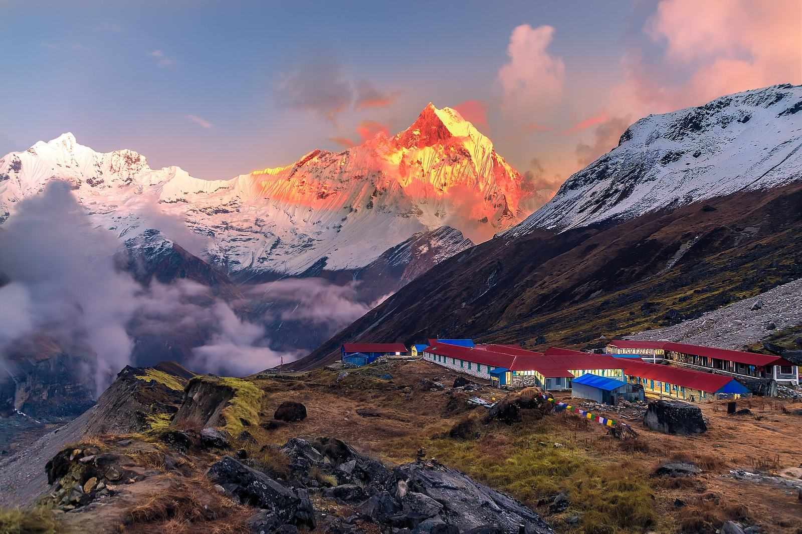

Annapurna Base Camp
A week from Pokhara through Gurung villages and the Modi Khola gorge to the lodges at 4,130 m inside the Annapurna Sanctuary, returning by the Jhinu hot springs.


- Duration
- 6–11 days
- Distance
- 62 kmapproximate
- Highest point
- 4,130 mAnnapurna Base Camp · 13,550 ft
- Highest night
- 4,130 mAnnapurna Base Camp
- Difficulty
- ModerateTeahouse lodges
- Best months
- Apr, Oct–Nov
Is this trek right for me?
The walking
8 days in all. Most walking days are 5 to 6 hours on foot, and the longest is about 7 hours. Five to seven hour days with real climbs, usually below 4,500 m.
The height
You sleep as high as 4,130 m. Most people feel the altitude at this height. The plan includes the rest days you need: do not shorten it.
Where you sleep
In lodges every night: a simple twin room, a shared bathroom and hot meals in a warm dining room.
The help you need
The rules require a licensed guide on this route. A porter to carry your bag is your choice.
What it costs
A guided trip with a trekking company usually costs USD 700 to 1,100 a person, going by the prices 8 companies published for 2026.
Overview
The Annapurna Sanctuary is a high glacial basin walled in by Annapurna I, Annapurna South, Hiunchuli, Gangapurna and Machhapuchhre, with a single way in: the gorge of the Modi Khola. The trek follows that river from the Gurung villages of Ghandruk and Chhomrong, through bamboo and rhododendron forest, to the lodges on the moraine at base camp. You go up and back by the same valley, so the days going down retrace the days going up.
Nothing on the route is technical, but it is not a gentle walk. The trail between Ghandruk and Bamboo is built largely of stone steps, and it loses height at every side stream before climbing again, so the daily ascent is much greater than the altitude figures suggest. Above Deurali the path crosses the run-out of avalanche gullies, and the last two days gain height quickly enough for many people to feel the altitude at base camp.
Roads have shortened the approach. Jeeps now reach Ghandruk and a point just across the bridge from Jhinu Danda, which is why most plans take seven or eight days from Pokhara rather than the ten or eleven of the old walk from Nayapul or Dhampus. Lodges are frequent and comfortable as far as Chhomrong and simpler in the gorge, where each stop has only a few houses and beds are worth reserving in October, November, March and April.
Highlights
- Sunrise on the south face of Annapurna I from base camp
- The old Gurung quarter of Ghandruk
- Machhapuchhre seen from directly below at its base camp
- Bamboo and rhododendron forest in the Modi Khola gorge
- Hot spring pools beside the river at Jhinu Danda
Moderate: No technical ground and a top height of 4,130 m, but long flights of stone steps and repeated descents make the days harder than the distances suggest.
Altitude profile
Height at the end of each day, with the high points in between. Dots are the places you sleep.
1 night gains height faster than the usual guideline. That is common on standard itineraries, but it is where problems start. Check how you feel before each of these climbs.
- Day 5, Annapurna Base Camp: Sleeping altitude rises 900 m in one day, well over the 500 m guideline. Split the climb if you can.
Try adding a night in the acclimatization checker · Check your symptoms
Day by day
About 28–34 h of walking in total. Times are for a steady pace with short breaks; add more for photos and tea.
-
Day1
Drive to Ghandruk
Pokhara to Nayapul to Kimche to Ghandruk
About three hours by jeep through Nayapul and Kimche to the stand below the village, then a 20-minute climb on stone steps. Spend the afternoon in the old upper village and the Gurung museum.
61 places to stay in Ghandruk, such as Annapurna Guesthouse, Annapurna Guesthouse Restaurant And Bar and Hotel Gurkhas Villa. See them
Transfer- Sleep at
- 1,940 m
- Change
- +1,118 m
- Jeep
- 3–4 h
-
Day2
Ghandruk to Chhomrong
Ghandruk to Komrong Danda to Chhomrong
Up for an hour to Komrong Danda, steeply down about 450 m to the Kimrong Khola, then a long traverse and climb to Chhomrong. A short day on the map that feels like a full one. Permits are checked on arrival.
15 places to stay in Chhomrong, such as Chomrong Mountain View Lodge and Restaurant, International Guest-House and Restaurant and Kalpana Guest-House and Restaurant. See them
- Sleep at
- 2,170 m
- Change
- +230 m
- High point
- 2,250 m
- Walking
- 5–6 h
- Distance
- 9 km
-
Day3
Chhomrong to Dovan
Chhomrong to Sinuwa to Bamboo to Dovan
Down several hundred stone steps to the Chhomrong Khola bridge and up again to Sinuwa, then rolling forest trail to Bamboo and another hour to Dovan. Remember those steps: on the way back you climb them at the end of a long day.
5 places to stay in Dovan, such as Annapurna-Approach Lodge, Dovan Guest House and Tip Top Lodge. See them
- Sleep at
- 2,600 m
- Change
- +430 m
- Walking
- 5–6 h
- Distance
- 11 km
-
Day4
Dovan to Deurali
A short day on purpose. The trail climbs through the last of the forest past Himalaya and the overhanging rock of Hinku Cave to Deurali. Stopping here keeps the height gain modest and puts you at the start of the avalanche section first thing tomorrow.
4 places to stay in Deurali, such as Shangrila Guest House and Restaurant, Dream Lodge and New Panorama. See them
- Sleep at
- 3,230 m
- Change
- +630 m
- Walking
- 3–4 h
- Distance
- 6 km
-
Day5
Deurali to Annapurna Base Camp
Deurali to Machhapuchhre Base Camp to Annapurna Base Camp
Leave at first light to pass the avalanche gullies before the sun loosens the slopes above. At Machhapuchhre Base Camp the valley turns west and opens, and a steady two-hour climb leads to base camp. This is a 900 m gain in sleeping height, so stop at MBC if you feel unwell.
5 places to stay in Annapurna Base Camp, such as Hotel Paradise Garden and Restaurant, Snowland Lodge And Restaurant and Sunrise Lodge. See them
High point day Fast gainSleeping altitude rises 900 m in one day, well over the 500 m guideline. Split the climb if you can.
- Sleep at
- 4,130 m
- Change
- +900 m
- Walking
- 4–5 h
- Distance
- 8 km
-
Day6
Base camp to Bamboo
Annapurna Base Camp to Machhapuchhre Base Camp to Deurali to Dovan to Bamboo
Stay out for sunrise on the south face, then start down after breakfast and cross the avalanche section before mid-morning. It is a descent of more than 1,800 m, and the wet stone steps in the forest are slippery.
3 places to stay in Bamboo, such as The Bamboo Guest House, Bambou Guest House & Restaurant and Trekking Guest House. See them
- Sleep at
- 2,310 m
- Change
- −1,820 m
- Walking
- 6–7 h
- Distance
- 16 km
-
Day7
Bamboo to Jhinu Danda
Bamboo to Sinuwa to Chhomrong to Jhinu Danda
Back through the forest to Sinuwa, down to the Chhomrong Khola and up the long staircase into Chhomrong, then a steep drop to Jhinu. The hot springs are by the river, twenty minutes below the lodges.
8 places to stay in Jhinu Danda, such as Tibet Guest House & Restaurant, Hotel Ever Green and Restaurant and Jhinu Guest House. See them
- Sleep at
- 1,780 m
- Change
- −530 m
- Walking
- 5–6 h
- Distance
- 11 km
-
Day8
Jhinu Danda to Pokhara
Jhinu Danda to Nayapul to Pokhara
Cross the long suspension bridge to the jeep stand, about half an hour on foot, then drive down the Modi Khola to Nayapul and Pokhara. In the monsoon the track is sometimes blocked and you walk on to the next roadhead.
Transfer- Sleep at
- 822 m
- Change
- −958 m
- Jeep
- 3–4 h
Ways to change it
Start from Jhinu Danda
Riding a jeep to the bridge below Jhinu and walking straight up to Chhomrong cuts the trek to six days. You miss Ghandruk and reach altitude a day sooner.
Via Ghorepani and Poon Hill
Begin with the two-day walk from Nayapul to Ghorepani, cross to Tadapani and join the main route at Chhomrong. It adds three days and the Poon Hill sunrise.
Sleep at Machhapuchhre Base Camp
Stopping at 3,700 m and walking to base camp before dawn spreads the height gain and suits anyone who adapts slowly.
Walk out by Landruk and Dhampus
From Jhinu cross the Modi Khola and follow the old trail through Landruk, Tolka and Pothana to Dhampus or Kande. It adds a day, mostly away from the road.
Route map
The map loads when you scroll here. It needs a connection the first time; tiles you have viewed stay available offline.
The solid line follows footpaths mapped in OpenStreetMap. It is a guide to where the route goes, not a navigation track: trails are rerouted after landslides, so follow the signs and people on the ground. Marker positions come from OpenStreetMap where we could match a place, and from our own estimates elsewhere.
Download the trail for a map app A GPX file with 54 km of mapped path and every stop. It opens in free apps such as Organic Maps.
When to go
- January: difficult
- February: difficult
- March: good
- April: best time
- May: good
- June: difficult
- July: difficult
- August: difficult
- September: good
- October: best time
- November: best time
- December: good
October and November have the most settled weather. March and April bring rhododendron bloom lower down, but after a snowy winter they are also the main avalanche period above Deurali. December is cold and clear. In January and February snow often closes the trail above Deurali, and the monsoon means leeches, cloud and slippery steps.
Permits and guide rules
Guide required. Since April 2023 the Nepal Tourism Board has required foreign trekkers in conservation areas to walk with a licensed guide, though checks on the trail are inconsistent. On this route a guide earns the fee above Deurali, by judging whether the avalanche section is safe to cross that morning and by holding beds in the small gorge lodges.
ACAP
Conservation areaAnnapurna Conservation Area Permit · National Trust for Nature Conservation
| Foreign nationals | NPR 3,000 | person, single entry |
| SAARC nationals | NPR 1,000 | person, single entry |
Where: Online at NTNC's e-permit site, or in person at the Tourist Service Centre in Bhrikutimandap, Kathmandu, and the Nepal Tourism Board office in Pokhara. A permit issued at a trail checkpost costs double.
The fee includes tax and children under 10 do not need a permit. Paying online by card adds a 2.9% gateway charge. Covers every trek in the Annapurna range and Lower Mustang; Upper Mustang and Nar Phu need a restricted-area permit as well.
TIMS card
RegistrationTrekkers' Information Management System card · Nepal Tourism Board and the Trekking Agencies' Association of Nepal
| Foreign nationals | NPR 2,000 | person, per trek |
| SAARC nationals | NPR 1,000 | person, per trek |
Where: Only through a registered trekking agency, which applies in the Nepal Tourism Board's online system with your route and your guide's details. Individual trekkers can no longer buy one over the counter.
Since the revised rules of 31 March 2023 the card is tied to trekking with a licensed guide on the tourism board's listed routes. It is not used in Khumbu, where the municipality's Trek Card took its place in 2017. For restricted areas the published rules pull both ways: TAAN's pages say TIMS applies in every trekking area, restricted ones included, yet also list visitors holding Department of Immigration permits among those who do not need one, and agencies disagree. Your agency, which is compulsory there anyway, will know what the checkposts on your route ask for. Reports from 2025–26 describe patchy checks of the card, especially in Annapurna.
Agency required
Fees and rules change, sometimes mid-season. Treat these as a planning guide and confirm with the Nepal Tourism Board, the Department of Immigration or a registered agency before you travel. Last reviewed 2026-11. All permits and fees
Getting there
Pokhara is the base. Most trekkers take a jeep or the local bus to Ghandruk by way of Nayapul and Kimche, and finish at the jeep track across the suspension bridge from Jhinu Danda. Both drives take about three hours and are rough beyond Nayapul.
-
Jeep: Pokhara to Ghandruk · 2.5–3 hr
Private or shared jeep to the stand below the village; the last 20 minutes are on foot.
-
Bus: Pokhara to Kimche · 3.5–4 hr
Local buses from the Baglung bus park stop at Kimche, an hour's climb below Ghandruk.
-
Drive: Pokhara to Nayapul · 1.5–2 hr
The old trailhead. Walking from here adds four to five hours, mostly beside the road, to Ghandruk.
-
Jeep: Jhinu Danda to Pokhara · 3–3.5 hr
Jeeps wait at the roadhead across the long bridge. In the monsoon the track can be cut and you walk further down the valley.
- Gateway
- Pokhara
- Walk starts
- Ghandruk · 1,940 m
- Walk ends
- Jhinu Danda · 1,780 m
Hazards on this route
Avalanches above Deurali
Between Hinku Cave, Deurali and Machhapuchhre Base Camp the trail runs beneath gullies that funnel avalanches off Hiunchuli. The danger is greatest after heavy snowfall and from late winter into spring; in January 2020 a slide here killed seven people. Cross early, do not stop in the gullies, and take the marked detour on the opposite bank whenever lodge owners say the main trail is unsafe.
Fast height gain to base camp
The usual plan goes from 3,230 m at Deurali to 4,130 m in one day, more than the recommended rate. Headache and poor sleep at base camp are common. If symptoms appear, sleep at Machhapuchhre Base Camp or go down; do not wait at the top for them to pass.
Stone steps and wet trail
Thousands of stone steps and a damp, shaded gorge make slips the commonest cause of injury here. Use poles on the descent and take extra care after rain or frost.
Snow and cold in winter
From late December to February snow can lie from Deurali upward and nights at base camp fall to minus 10 °C or lower. The upper lodges sometimes close after heavy snowfall, so ask at Chhomrong before going on.
Practical tips
- Carry all the cash you need from Pokhara; there is no cash machine on the route.
- Reserve lodges from Bamboo upward in peak season. Each stop has only a handful of buildings.
- No meat is served above Sinuwa. Expect dal bhat, noodles, eggs and potatoes.
- Plastic water bottles are banned above Chhomrong. Carry a bottle and refill it at the safe-water stations or treat stream water.
- Bring microspikes from December to March, when the trail above Himalaya can be icy.
- Pack shorts or a swimsuit for the Jhinu hot springs on the way down.
We know of no cash machines on this route. Carry all the rupees you need from Pokhara. Work out how much.
Plan this trek
Choose your dates and see the whole trip on one page: where you sleep each night, who can help you, what it may cost and the papers you need. Then ask for a price.
More tools for this trek
Who can help you on this trek
The rules require a licensed guide on this route. A porter to carry your bag is your choice.
-
A trekking company that arranges everythingUsually USD 700 to 1,100 a person for everything on the trek.
-
A guide, and a porter to carry your bagAbout USD 25 to 40 a day for the guide and USD 18 to 25 for the porter.
-
A guideAbout USD 25 to 40 a day.
-
A porter to carry your bagThe rules require a licensed guide on this route.
-
On your ownThe rules require a licensed guide on this route.
Do you work on the Annapurna Base Camp route as a guide, porter or company? Join TrekkSewa.
Quick answers
How long does the Annapurna Base Camp trek take?
Most people take 6–11 days. The itinerary on this page is 8 days.
How high does the Annapurna Base Camp trek go?
The highest point is Annapurna Base Camp at 4,130 m (13,550 ft). The highest place you sleep is Annapurna Base Camp at 4,130 m.
How difficult is it?
We grade it moderate. No technical ground and a top height of 4,130 m, but long flights of stone steps and repeated descents make the days harder than the distances suggest.
Which permits do I need?
ACAP, TIMS card. Fees and where to get each one are listed in the permits section above.
Do I need a guide?
Since April 2023 the Nepal Tourism Board has required foreign trekkers in conservation areas to walk with a licensed guide, though checks on the trail are inconsistent. On this route a guide earns the fee above Deurali, by judging whether the avalanche section is safe to cross that morning and by holding beds in the small gorge lodges.
When is the best time to go?
Apr, Oct–Nov are best. October and November have the most settled weather. March and April bring rhododendron bloom lower down, but after a snowy winter they are also the main avalanche period above Deurali. December is cold and clear. In January and February snow often closes the trail above Deurali, and the monsoon means leeches, cloud and slippery steps.
The stages on this route are well established. Reviewed 2026-11. Trails, lodges and rules change; confirm locally before you rely on any detail. Report a correction.
Similar treks
More in Annapurna Annapurna
Annapurna
Ghorepani Poon Hill
A short loop through rhododendron forest to a famous sunrise ridge
 Annapurna
Annapurna
Mardi Himal
A narrow ridge walk to the foot of Machhapuchhre in five days
 Annapurna
Annapurna
Khopra Ridge
Community lodges on a quiet ridge face to face with Dhaulagiri
 Annapurna
Annapurna
Annapurna Circuit
Around the Annapurna range and over the 5,416 m Thorong La